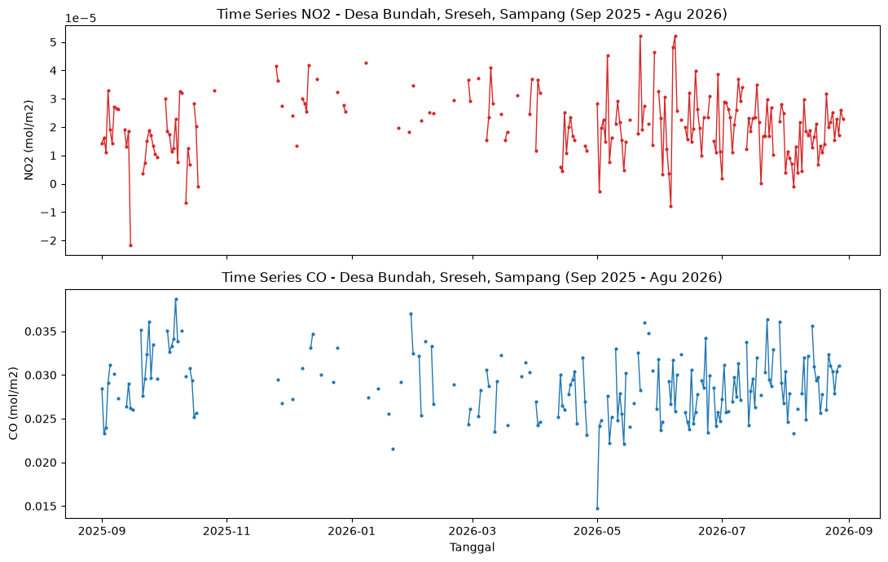
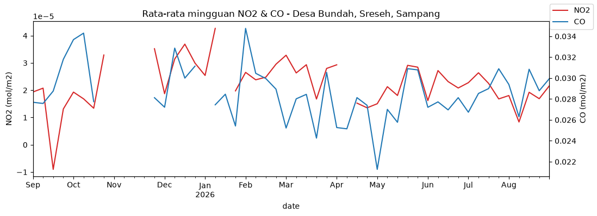

3. Data Collection & Time Series#
Langkah besarnya:
Definisikan batas wilayah (GeoJSON) Desa Bundah.
Ambil data NO2 & CO dari Sentinel-5P untuk 1 Sep 2025 – 31 Agu 2026.
Simpan ke CSV.
Plot time series.
0. Siapkan batas wilayah (GeoJSON)#
Buka https://geojson.io/
Cari lokasi Desa Bundah, Kecamatan Sreseh, Kabupaten Sampang (titik tengah kira-kira -7.1781, 113.0548).
Gambar polygon di sekitar area yang mau dianalisis (misalnya area pemukiman + pesisir desa).
Copy hasilnya (menu di kanan bawah geojson.io)
../geojson/bundah_sreseh_sampang.geojson(file ini sudah diisi kotak sementara sebagai contoh, ganti dengan polygon yang lebih akurat).
import json
import pandas as pd
import matplotlib.pyplot as plt
with open("../geojson/bundah_sreseh_sampang.geojson") as f:
aoi = json.load(f)
START_DATE = "2025-09-01"
END_DATE = "2026-08-31"
aoi
{'type': 'FeatureCollection',
'features': [{'type': 'Feature',
'properties': {'name': 'Montong, Kabupaten Tuban, Jawa Timur'},
'geometry': {'type': 'Polygon',
'coordinates': [[[111.80075, -7.033921],
[111.96733, -7.033921],
[111.96733, -6.915008],
[111.80075, -6.915008],
[111.80075, -7.033921]]]}}]}
CDSE openEO#
import openeo
connection = openeo.connect("openeofed.dataspace.copernicus.eu")
connection.authenticate_oidc() # ikuti link login yang muncul di output
# Cek koleksi tersedia (opsional, untuk memastikan nama koleksi & band masih sama)
# print(connection.list_collection_ids())
# print(connection.describe_collection("SENTINEL_5P_L2"))
cube_no2 = connection.load_collection(
"SENTINEL_5P_L2",
spatial_extent=aoi,
temporal_extent=[START_DATE, END_DATE],
bands=["NO2"],
)
no2_ts = cube_no2.aggregate_spatial(geometries=aoi, reducer="mean")
cube_co = connection.load_collection(
"SENTINEL_5P_L2",
spatial_extent=aoi,
temporal_extent=[START_DATE, END_DATE],
bands=["CO"],
)
co_ts = cube_co.aggregate_spatial(geometries=aoi, reducer="mean")
# Rentang 1 tahun cukup berat untuk dijalankan synchronous -> pakai batch job.
# Batch job openEO memakai "processing units" dari kuota gratis akun CDSE,
# jadi kalau kuota terbatas, pertimbangkan mempersempit polygon atau
# menurunkan frekuensi (mis. tiap 5 hari) di temporal_extent.
no2_job = no2_ts.create_job(title="no2_bundah_sreseh_1thn", out_format="JSON")
no2_job.start_and_wait()
no2_job.get_results().download_file("../data/no2_raw.json")
co_job = co_ts.create_job(title="co_bundah_sreseh_1thn", out_format="JSON")
co_job.start_and_wait()
co_job.get_results().download_file("../data/co_raw.json")
# Parse hasil openEO (format timeseries JSON: {timestamp: [[value]]}) jadi DataFrame rapi
def load_openeo_timeseries(path, colname):
with open(path) as f:
raw = json.load(f)
rows = []
for ts, values in raw.items():
# values biasanya nested list per-band per-polygon, ambil nilai pertama
v = values[0][0] if values and values[0] else None
rows.append({"date": ts[:10], colname: v})
return pd.DataFrame(rows)
df_no2 = load_openeo_timeseries("../data/no2_raw.json", "no2")
df_co = load_openeo_timeseries("../data/co_raw.json", "co")
df = pd.merge(df_no2, df_co, on="date", how="outer")
df["date"] = pd.to_datetime(df["date"])
df = df.sort_values("date").reset_index(drop=True)
df.head()
final_df = pd.read_csv("../data/kualitas_udara_bundah_sreseh.csv", parse_dates=["date"])
Simpan ke CSV#
Pakai df (dari Opsi A) atau df_gee
final_df = df # ganti jadi df_gee kalau pakai Opsi B
final_df.to_csv("../data/kualitas_udara_bundah_sreseh.csv", index=False)
final_df.tail()
Grafik time series#
fig, axes = plt.subplots(2, 1, figsize=(11, 7), sharex=True)
axes[0].plot(final_df["date"], final_df["no2"], color="tab:red", marker="o", markersize=2, linewidth=1)
axes[0].set_title("Time Series NO2 - Desa Bundah, Sreseh, Sampang (Sep 2025 - Agu 2026)")
axes[0].set_ylabel("NO2 (mol/m2)")
axes[1].plot(final_df["date"], final_df["co"], color="tab:blue", marker="o", markersize=2, linewidth=1)
axes[1].set_title("Time Series CO - Desa Bundah, Sreseh, Sampang (Sep 2025 - Agu 2026)")
axes[1].set_ylabel("CO (mol/m2)")
axes[1].set_xlabel("Tanggal")
plt.tight_layout()
plt.savefig("../data/time_series_no2_co.png", dpi=150)
plt.show()

# Versi rata-rata mingguan supaya tren lebih terbaca (mengurangi efek bolong data akibat awan)
weekly = final_df.set_index("date").resample("W").mean()
fig, ax = plt.subplots(figsize=(11, 4))
weekly["no2"].plot(ax=ax, label="NO2", color="tab:red")
ax.set_ylabel("NO2 (mol/m2)")
ax2 = ax.twinx()
weekly["co"].plot(ax=ax2, label="CO", color="tab:blue")
ax2.set_ylabel("CO (mol/m2)")
ax.set_title("Rata-rata mingguan NO2 & CO - Desa Bundah, Sreseh, Sampang")
fig.legend(loc="upper right")
plt.tight_layout()
plt.show()
